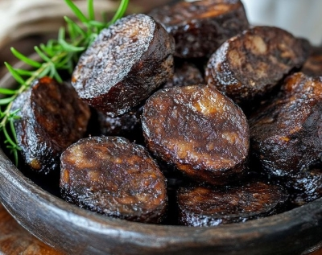

Gastronomía de Burgos
La gastronomía burgalesa tiene una personalidad propia, forjada entre montañas, riberas y siglos de tradición. Hablar de Burgos es hablar de una cocina que combina la contundencia castellana con una sensibilidad creciente hacia el producto local y la innovación. Desde los aromas de la morcilla y el lechazo asado hasta la frescura de sus huertas y la elegancia de sus vinos, la provincia ofrece un recorrido culinario que sorprende por su autenticidad. Cada plato cuenta una historia: la de sus pueblos, sus oficios y su clima. En Burgos, la mesa es un punto de encuentro donde conviven recetas ancestrales y propuestas contemporáneas que reinterpretan la identidad del territorio sin perder su esencia. Es un destino ideal para quienes disfrutan descubriendo sabores con carácter y una cultura gastronómica que se vive con orgullo.

Productos típicos de Burgos
A continuación se muestra una lista de productos típicos de la gastronomía burgalesa:
- Morcilla de Burgos
- Queso fresco de Burgos
- Lechazo asado
- Sopa castellana
- Picadillo de chorizo
- Olla podrida
- Vinos de la Ribera del Duero:
- Tintos jóvenes
- Tintos jóvenes roble
- Tintos crianza
- Tintos reserva y gran reserva
- Rosados
- Blancos
- Morcilla de Burgos
- Embutido tradicional elaborado con arroz, cebolla y sangre, famoso por su sabor suave y especiado.
- Queso fresco de Burgos
- Producto lácteo suave y ligeramente húmedo, elaborado tradicionalmente con leche de oveja o vaca. Destaca por su sabor delicado y su textura tierna, siendo un acompañamiento habitual en ensaladas, postres o platos fríos.
- Lechazo asado
- Cordero lechal de raza churra, cocinado lentamente en horno de leña con agua y sal. Su carne es extremadamente tierna y jugosa, con un sabor característico que lo convierte en uno de los emblemas gastronómicos de la provincia.
- Sopa castellana
- Sopa tradicional elaborada con pan, ajo, pimentón y caldo, a menudo enriquecida con huevo escalfado. Es un plato humilde y reconfortante, muy típico de las cocinas castellanas durante los meses fríos.
- Picadilo de chorizo
- Preparación a base de carne de cerdo adobada con pimentón, ajo y especias, similar al relleno del chorizo antes de embutirse. Se consume frito o salteado y suele acompañarse con huevos, patatas o pan.
- Olla podrida
- Guiso castellano de alubias rojas con carnes y embutidos, típico de la zona de Ibeas de Juarros.
Restaurantes de Burgos
A continuación se muestra una lista de restaurantes típicos de la provincia:
| Restaurante | Dirección |
|---|---|
| Casa Pancho | Calle San Lorenzo, 13-15, 09003 |
| Casa Ojeda | Calle Vitoria, 5, 09004 |
| La Fábrica | Calle San Juan, 3, 1ª izquierda, 09003 |
| La Boca del Lobo | Calle Avellanos, 9, 09003 |